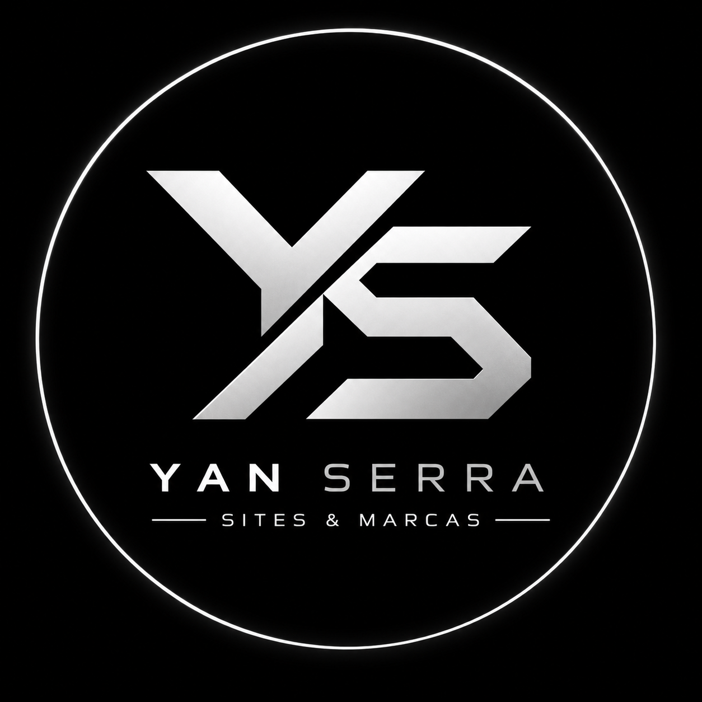

01
⌘
Landing Page
R$ 600,00Página única para divulgar uma oferta, apresentar um serviço ou transformar visitas em contatos.

YAN SERRASITES & MARCASESTRATÉGIA · DESIGN · TECNOLOGIA
Pequeno no começo. Grande na intenção.
Conheça Serviços ↘O QUE FAZEMOS
Da primeira impressão ao contato com o cliente, construímos ferramentas digitais pensadas para a realidade da sua empresa.
Página única para divulgar uma oferta, apresentar um serviço ou transformar visitas em contatos.
Apresente sua empresa, seus serviços, diferenciais e canais de contato em um site profissional.
Cardápio digital com produtos, pedidos e painel para administrar o conteúdo do estabelecimento.
Vitrine online de produtos com painel para organizar e atualizar o catálogo.
Cardápio digital com pedidos e painel ou catálogo digital com painel, incluindo cinco meses de manutenção.
Manutenção contratada separadamente, cobrada por mês completo.
POR QUE TER UM SITE?
Um site é mais do que aparecer na internet: é ter um espaço próprio para apresentar seu negócio com clareza e credibilidade.
Uma presença profissional ajuda o cliente a conhecer sua empresa e entender o que você oferece.
Serviços, produtos, preços e contatos ficam reunidos em um só lugar, acessível pelo celular.
Facilite o contato, divulgue suas ofertas e dê aos clientes um caminho simples para chegar até você.
Tenha uma página própria para compartilhar nas redes sociais e apresentar sua marca com consistência.
REGRAS DO SERVIÇO
Tudo combinado antes do início, para que o escopo, os custos e a entrega fiquem claros para ambas as partes.
Pagamento exclusivamente via Pix. Parcelamento somente mediante negociação prévia com Yan Serra.
Adicionais, alterações fora do escopo e novas funcionalidades devem ser definidos previamente com Yan Serra e podem ter custo extra.
Manutenção avulsa por R$ 85,00 por mês completo, mediante contratação. Os serviços incluídos são combinados antes do início.
A contratação, o pagamento e a renovação da hospedagem e do domínio ficam por conta do cliente, salvo acordo escrito diferente.
Após a finalização, o cliente deve revisar e testar o site. Com a aprovação, o pagamento integral e a entrega definitiva, o projeto é considerado concluído. Manutenção e alterações posteriores não estão incluídas, salvo se previstas no pacote contratado ou em garantia acordada. A aprovação não elimina direitos ou garantias legalmente exigíveis.
NOSSA INTENÇÃO
A Yan Serra Sites e Marcas nasceu com um objetivo: ajudar negócios a construir uma presença digital profissional, com soluções claras, funcionais e alinhadas às suas necessidades.
Cada projeto é desenvolvido com atenção aos detalhes, comunicação direta e foco no que realmente importa para o cliente.
Vamos conversar sobre seu projeto ↗CONTATO DIRETO
Entre em contato com Yan Serra Sites e Marcas para apresentar sua ideia, tirar dúvidas ou solicitar uma proposta.
Yan Serra Sites e Marcas · Fortaleza, Ceará, Brasil